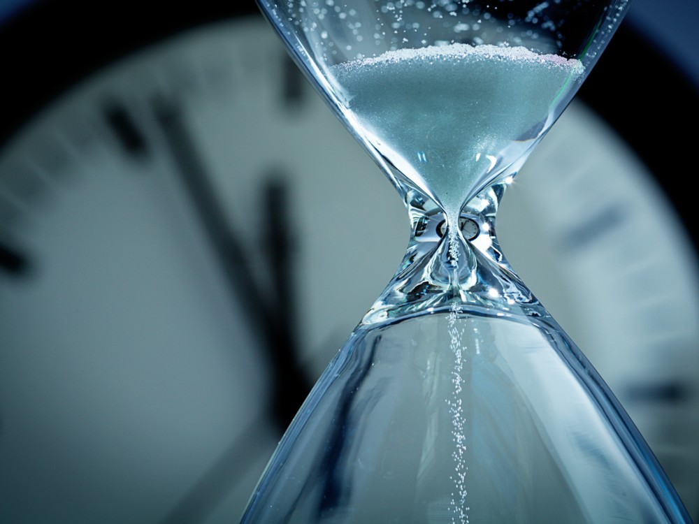

Un extraño material emula una estructura cristalina en la cuarta dimensión, el tiempo, en lugar de solo en el espacio
En una hazaña considerada teóricamente imposible, el físico Shivaji Sondhi, que publicó un artículo en Physics Review Letters sobre la base teórica de cómo los cristales de tiempo podrían existir, junto con dos equipos de científicos de la Universidad de Harvard y la Universidad de Maryland (EE. UU.) han conseguido crear cristales de tiempo. El hito científico ha sido publicado en la revista Nature.
En los cristales de tiempo -cuya existencia se sugirió por primera vez en 2012-, los átomos repiten un patrón a través de la cuarta dimensión, el tiempo, a diferencia de los cristales normales (como un diamante) que tienen átomos dispuestos en una retícula tridimensional repetitiva. Así, los átomos deben oscilar para siempre sin ninguna influencia externa dado que el cristal de tiempo parece un sistema cerrado.
El profesor Chetan Nayak, de la Universidad de California en Santa Bárbara, escribió que "basándose en nuestros conocimientos actuales, había sido natural ver si era posible romper espontáneamente la simetría tiempo-traslacional de las leyes de la física pero es posible que el inusual movimiento de retroceso visto en los cristales de tiempo supuestamente no dure para siempre. Ambos grupos presentan evidencia de un cristal de tiempo pero sus resultados combinados apuntan a la necesidad de experimentos que muestren verdaderamente que las oscilaciones permanecen en fase durante largos períodos y no son eliminadas por las inevitables fluctuaciones".

Hallan «cristales de tiempo» en un material que está al alcance de los niños
Un equipo de físicos de la Universidad de Yale ha descubierto indicios de la existencia de un « cristal de tiempo» en el lugar que menos se esperaban: en el interior de un cristal «normal» y que bien podríamos encontrar en ciertos juguetes infantiles. El hallazgo ha abierto nuevos interrogantes y deja claro que sabemos aún muy poco sobre cómo se forman estas estructuras que desafían abiertamente las leyes de la Física.
Los cristales convencionales, como la sal, el cuarzo, los copos de nieve o los diamantes, tienen sus átomos ordenados en patrones muy estables y que se repiten una y otra vez en las tres dimensiones espaciales. En los cristales de tiempo, sin embargo, los átomos también se mueven siguiendo un patrón que se repite, aunque lo hace en el tiempo, y no en el espacio.
Seguir un patrón temporal (en vez de espacial) implica que los átomos de un cristal de tiempo nunca se acomodan en su estado fundamental, cosa que sí hacen los átomos de los cristales convencionales. Por lo general, cuando un material está en su estado fundamental (estado de mínima energía, también conocido como energía de punto cero de un sistema) su movimiento es imposible, porque eso requeriría un gasto de energía de la que ese sistema ya no dispone.
Por eso, los cristales «normales» permanecen inmóviles, ya que están en equilibrio y en su estado fundamental. Pero los cristales de tiempo tienen, repetimos, una estructura que no se repite en el espacio, sino en el tiempo, y por lo tanto siguen oscilando incluso en su estado fundamental. Es decir, nunca alcanzan el equilibrio y, literalmente, no pueden permanecer quietos. Lo más perturbador es que esa oscilación cíclica y repetida tiene lugar una y otra vez sin necesidad de utilizar energía alguna. Ante este panorama, los físicos se sienten como exploradores que entraran por primera vez en un continente totalmente desconocido.
Cristales en un juguete
El hallazgo de los investigadores de Yale se describe minuciosamente en dos artículos recién publicados en las revistas Physical Review Letters y Physical Review B. Ambos estudios representan el segundo experimento conocido que ha sido capaz de observar la firma reveladora de un cristal de tiempo dentro de un sólido.
«Decidimos tratar de buscar los cristales de tiempo por nosotros mismos -afirma el profesor de física de Yale Sean Barrett, investigador principal de los dos nuevos estudios-. Mi estudiante Jared Rovny había hecho crecer cristales de fosfato de monoamonio (MAP) para un experimento completamente diferente, así que probamos con algo que ya teníamos en nuestro laboratorio».
Los cristales de MAP se consideran tan fáciles de cultivar que a veces se incluyen en kits de cultivo de cristales destinados a los más pequeños. Según Barret, encontrar un cristal de tiempo dentro de un cristal MAP es algo fuera de lo corriente, porque hasta ahora se pensaba que los cristales de tiempo solo se formaban en el interior de cristales con un mayor desorden interno».
Utilizando resonancias magnéticas nucleares, los investigadores se sorprendieron al encontrar tan rápidamente lo que buscaban: la «firma» inconfundible que delataba la presencia de cristales de tiempo. «Nuestras mediciones resultaron bastante sorprendentes desde el principio -explica Barret-. Nuestro trabajo sugiere que un cristal de tiempo podría encontrarse, en principio, buscando en un simple kit de cultivo de cristales para niños».
En síntesis
Los cristales corresponden a un estado ordenado de la materia donde la disposición de los átomos se repite con un cierto patrón. En la jerga de los físicos, se dice que presentan una «ruptura espontánea de la simetría bajo traslaciones espaciales».
Los cristales temporales, un nuevo concepto propuesto en 2012, son un estado de la materia cuyos patrones se repiten en el tiempo en vez de en el espacio. Estos sistemas muestran una ruptura espontánea de la simetría bajo traslaciones temporales.
En 2017 se descubrieron los primeros materiales nuevos que se ajustan completamente a la noción de cristal temporal. Esos materiales y otros encontrados desde entonces ofrecen la posibilidad de crear relojes aún más precisos que los actuales.
En 2012, el físico teórico Frank Wilczek propuso un polémico concepto para describir un nuevo estado de la materia que desafiaba las leyes de la física.
"Cristales de tiempo", los llamó Wilczek, quien en 2004 ganó el Premio Nobel de física.
Al principio, varios de sus colegas dijeron que era simplemente imposible crear cristales de tiempo, pero luego, varias investigaciones, incluyendo un reciente estudio de la Universidad de Granada en España, han comenzado a mostrar que quizás sí es posible crear este extraño material.
Producir estos cristales nos permitiría medir el tiempo y la distancias con una "precisión exquisita", como escribió Wilczek en un artículo en la revista Scientific American.